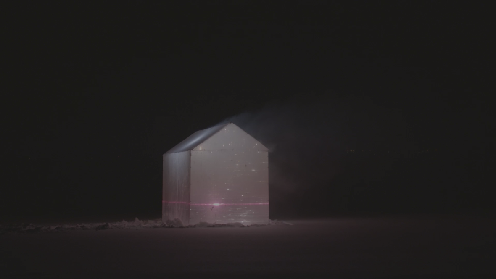
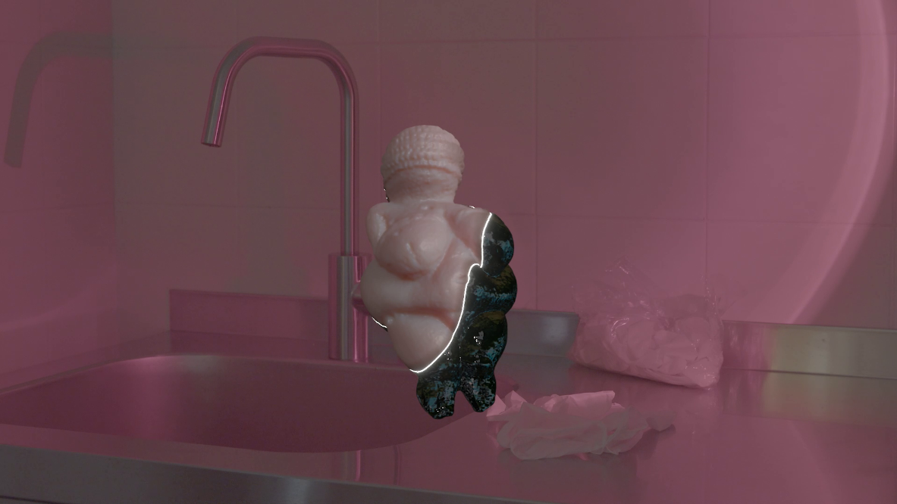
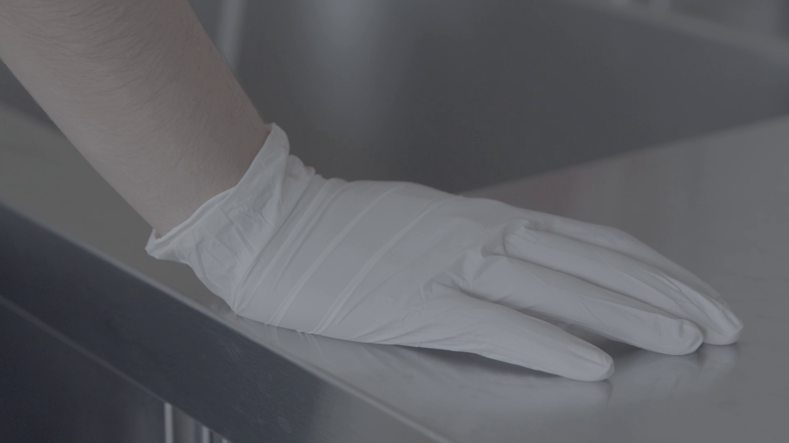
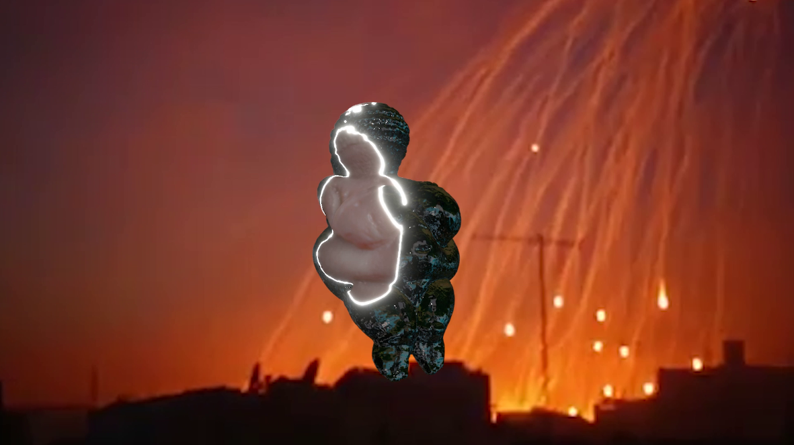
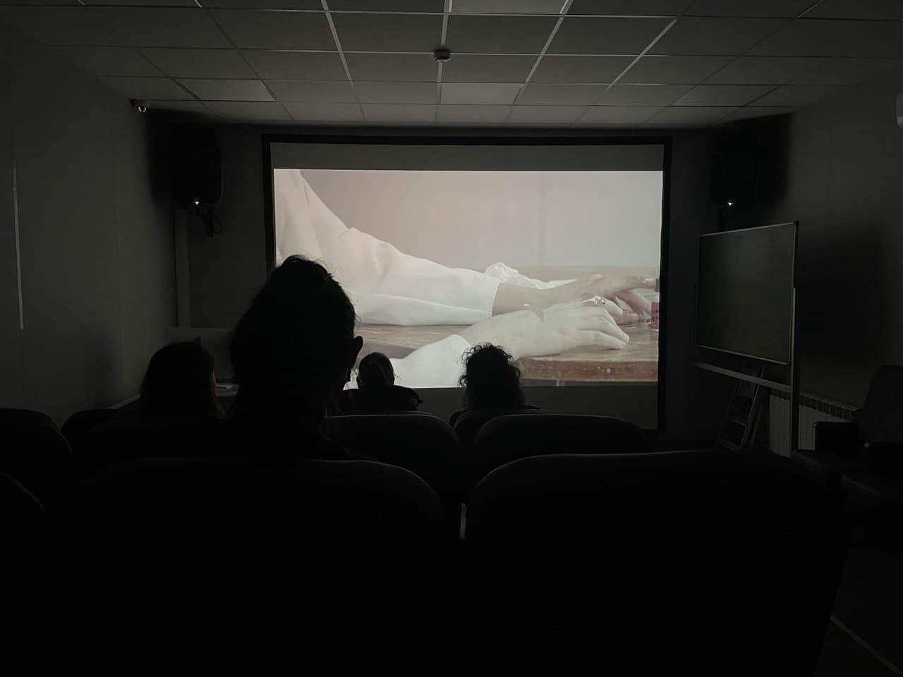
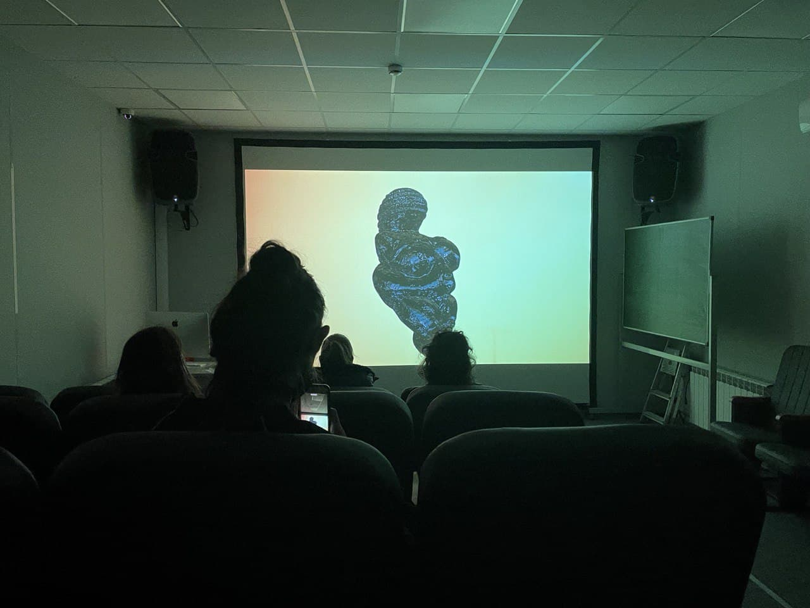

EN / RUS
Bearing Light
Group exhibition at Garage Studios, 2022
Single channel HD video, 5 min.
In collaboration with Nastya Nikiforova
In the video essay “Bearing Light”, filmed in January of 2022, the artists conveyed a sense of powerlessness from the inability to influence ongoing events and observations of injustice. For almost half a year after the film was finished, this paralyzing state of despair acquired a terrifying reality and entered the spectrum of everyday emotions.
The video sequence of the work consists of disturbing images that raise questions about their origins. A wound is visible through the glove - how did it appear on the body? Why is it sealed with tape? What kind of lights leave traces in the skies - fireworks or shells? The search for the causes of disparate phenomena and individual injuries hidden from prying eyes turns into a search for turning points in feelings, personal destinies, and history.
     